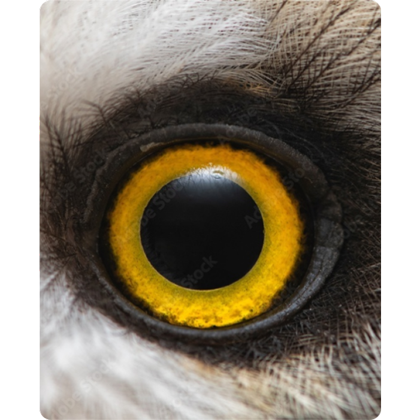
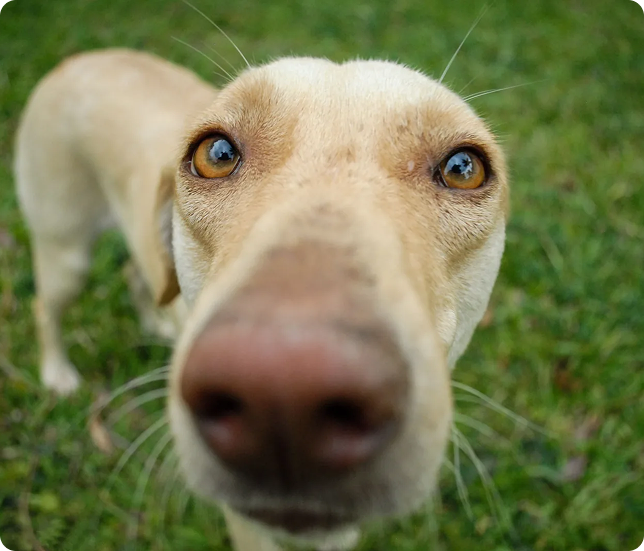
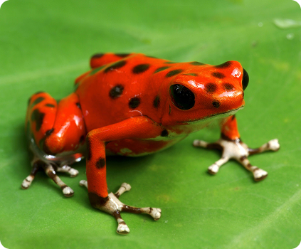
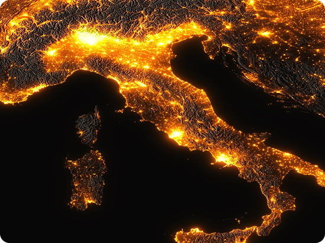

Le bolle sensoriali delle creature non-umane e la sfida dell’alterità in Un mondo immenso di Ed Yong.

La vista umana non è la misura del reale. Gli animali vivono in Mondi Percettivi autonomi e inaccessibili a noi.
Le passeggiate canine non sono traiettorie: l’olfatto costruisce passato, presente e futuro del territorio.
Rifiuto della narrazione antropocentrica: le creature non sono modelli tecnologici, ma esistenze legittime.

I colori dei petali adattati alla vista tricromatica delle api.
Livree appariscenti modellate sulla vista tetracromatica degli uccelli.
La bellezza floreale sboccia guidata dall’occhio di chi osserva.

Notti Saturate: Alterazione del volo e disorientamento delle rotte migratorie.
Rumore Antropico: Azzeramento delle comunicazioni e dei segnali d’allarme.
Trappole Sensoriali: Alterazione della chimica e della magnetoricezione.

«L’esistere di ciò che abbiamo intorno è il frutto diretto dell’esistenza dell’altro.»